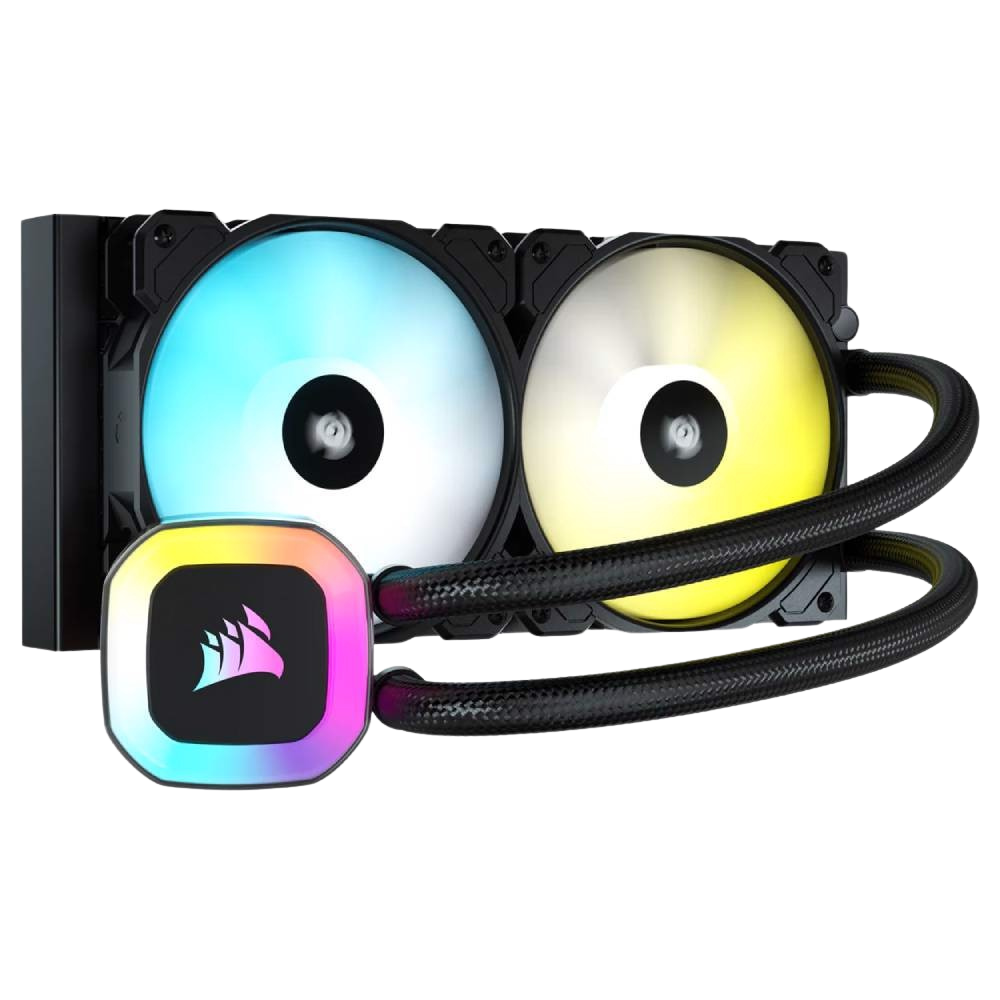

Soğutma
Soğutma sistemleri, bilgisayar bileşenlerinin yüksek performansla çalışırken ürettiği ısının kontrol altında tutulmasını sağlar. Hem hava hem de sıvı soğutma çözümleri, sistem stabilitesi ve bileşen ömrü açısından kritik rol oynar.
Soğutma Sistemlerinin Temel Özellikleri
Etkili bir soğutma sistemi, bilgisayarınızın performansını ve dayanıklılığını artırır. İşte öne çıkan özellikler:
1️⃣ Hava Soğutma
Fanlar ve ısı emici bloklardan oluşan hava soğutma sistemleri, bileşenlerden gelen ısıyı havaya aktarır. Genellikle ekonomik ve kurulumu kolaydır.
2️⃣ Sıvı Soğutma
Sıvı soğutma sistemleri, ısıyı daha verimli bir şekilde uzaklaştırmak için su veya özel soğutma sıvıları kullanır. Yüksek performanslı sistemlerde tercih edilir.
3️⃣ Pasif Soğutma
Hareketli parça içermeyen pasif soğutma, sessiz çalışma avantajı sunar ancak genellikle düşük ısı dağıtım performansına sahiptir.
Soğutma Seçerken Dikkat Edilmesi Gerekenler
Seçiminizi yaparken göz önünde bulundurmanız gerekenler:
✔ Uyumluluk: Anakart ve kasa ile uyumlu ölçü ve bağlantılara sahip mi?✔ Performans: İhtiyaç duyulan ısı dağıtımını sağlayabiliyor mu?
✔ Gürültü Seviyesi: Fan ve pompa sesleri istenmeyen gürültüyü yaratmıyor mu?
✔ Kurulum Kolaylığı: Montajı ve bakım işlemleri kullanıcı dostu mu?
Soğutma Çeşitleri
🎮 1. Fanlı Soğutma Sistemleri
En yaygın kullanılan soğutma yöntemi olup, yüksek hava akışı sayesinde bileşenlerden ısıyı uzaklaştırır.
💻 2. Sıvı Soğutma Sistemleri
Özellikle overclock yapan ve yüksek performans bekleyen sistemlerde tercih edilen sıvı soğutma, daha düşük sıcaklıklar sağlar.
🖥 3. Hibrit Sistemler
Hem hava hem de sıvı soğutmanın avantajlarını birleştiren hibrit sistemler, optimum performans ve sessiz çalışma sunar.